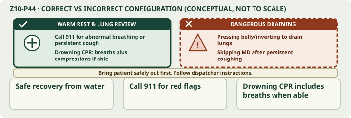

Z10-P44 · Wilderness medicine · Adapted historical material
Monitor submersion survivors for delayed breathing deterioration
Recognize that water aspiration during near-drowning requires medical evaluation even after the person resumes coughing and talking.
When it applies · Anyone submerged, dunked under ice or surf, or who inhaled water during a cold-water incident.
Equipment · Dry insulating shelter, watch, written monitoring log, and 911 communications.

Actions
- Activate 911 immediately for ANY submersion involving loss of consciousness, cessation of breathing, persistent coughing, foamy sputum, chest discomfort, or blue lips; if unresponsive and not breathing normally, start trained/dispatcher CPR immediately.[M03, X02, T02]
- Even when a submerged person exits coughing and alert, remove wet layers, keep them resting warmly, and arrange prompt clinical medical evaluation—aspirated water can irritate lung linings and cause worsening breathing distress over subsequent hours.[X02, M23, M20]
- Do NOT attempt abdominal thrusts or turn a person upside down to "drain water from lungs"—that delays ventilation and triggers vomiting and aspiration.[M03, M04]
Failure recognition · Sending a child or paddler home to nap after a brief near-drowning episode without medical assessment while persistent coughing worsens.[X02, M20]
Verify · Confirm breathing rate, cough severity, mental clarity, and medical evaluation plan are documented and communicated.[M20, T02]
Stop or change course · Any worsening cough, fast labored breathing, chest pain, extreme fatigue, or confusion after submersion requires immediate 911 transport.[T02, M03]
Evidence and editorial notes
- M03 · American Red Cross · CPR Steps and Emergency Response (current web edition)
- Section: Check, Call, Care; Unresponsive Person Without Normal Breathing · Conditions: Unresponsive person not breathing normally; lay responder with EMS activation
Support: Verify scene safety, check responsiveness and normal breathing, call 911 and retrieve an AED if available, and begin dispatcher-guided or trained CPR.
Limitations: Lay text reference cannot substitute for hands-on certified CPR/AED training. · Conflicting evidence: None; aligns with AHA/ARC bystander guidance.
Editorial note: Distinguishes lay activation and dispatcher-guided CPR from advanced life support. · Specialist reviewer: EMS and resuscitation specialist
Primary source · checked 2026-11-24 - M04 · NIH / MedlinePlus · Choking (current web edition)
- Section: Recognizing Severe Airway Obstruction and Emergency Escalation · Conditions: Conscious or unresponsive person with severe choking
Support: Encourage forceful coughing if the person can cough or speak; activate 911 immediately for silent inability to breathe or speak and follow trained/dispatcher-guided airway-clearing care.
Limitations: Blind finger sweeps can lodge obstructions deeper into the airway. · Conflicting evidence: None; aligns with ARC choking guidance.
Editorial note: Keeps airway maneuvers bounded by formal training and 911 dispatcher guidance. · Specialist reviewer: EMS and emergency medicine
Primary source · checked 2026-11-24 - M20 · NIH / MedlinePlus · First Aid Overview (current web edition)
- Section: Lay First-Aid Scope, Kit Readiness, and Documentation · Conditions: Pre-trip kit preparation and remote patient monitoring
Support: Maintain an inspected, unexpired first-aid kit matched to your actual training, keep written patient observations (time, responsiveness, breathing, symptoms, interventions) for EMS handoff, and practice skills in certified courses.
Limitations: Carrying advanced medical instruments without clinical training adds risk rather than capability. · Conflicting evidence: None; aligns with ARC and NPS-K.
Editorial note: Anchors kit sizing, SOAP-style lay observation logs, and scope-of-practice cards. · Specialist reviewer: Wilderness EMS and clinical education
Primary source · checked 2026-11-24 - M23 · CDC · Preventing Hypothermia (current web edition)
- Section: Severe Cold Exposure, Gentle Handling, and Rewarming Limits · Conditions: Suspected moderate-to-severe hypothermia in remote settings
Support: Handle severely hypothermic patients gently, keep horizontal, insulate from cold ground and wind, remove wet clothing carefully, apply gentle external warmth to the trunk only, and arrange urgent medical evacuation.
Limitations: Rough handling or rapid extremity rewarming in severe hypothermia can trigger cardiac arrest; field responders cannot perform core internal rewarming. · Conflicting evidence: Reconciles frozen B012 P07–P08 and B013 P08 with clinical wilderness limits.
Editorial note: Links Z10 clinical cold care with Z12 environmental prevention. · Specialist reviewer: Wilderness medicine and cold-injury EMS
Primary source · checked 2026-11-24 - T02 · American Red Cross · First Aid Steps (current web edition)
- Section: First Aid Steps > Call 9-1-1 · Conditions: Lay emergency response to unresponsiveness, abnormal breathing or severe bleeding
Support: Activate EMS and get needed equipment. Follow dispatcher directions and act within training.
Limitations: Remote locations may delay EMS arrival, requiring sustained stabilization after activation. · Conflicting evidence: None; aligns with NPS-E.
Editorial note: Mandates early emergency activation and dispatcher adherence. · Specialist reviewer: EMS and wilderness medicine
Primary source · checked 2026-11-24 - X02 · Minnesota DNR · Cold Water Safety (current web edition)
- Section: Cold Water Safety > Cold Shock, Swim Failure and Hypothermia · Conditions: Immersion in water below 70°F (especially below 50°F / winter ice water)
Support: Cold shock can cause involuntary gasping and rapid breathing. Grip and swimming may deteriorate rapidly; flotation and early rescue matter. Onset and severity vary.
Limitations: Strong swimmers drown rapidly from cold shock and muscle incapacitation without flotation. · Conflicting evidence: Refutes myth that hypothermia is the only immediate cold-water killer.
Editorial note: Core physiological evidence for Z12 ice-breakthrough and maritime immersion cards. · Specialist reviewer: Cold-water rescue and wilderness medicine
Primary source · checked 2026-11-24
Source lineage · B013-P18 submersion care and American Red Cross; adapted historical material · Classification · Adapted historical material.